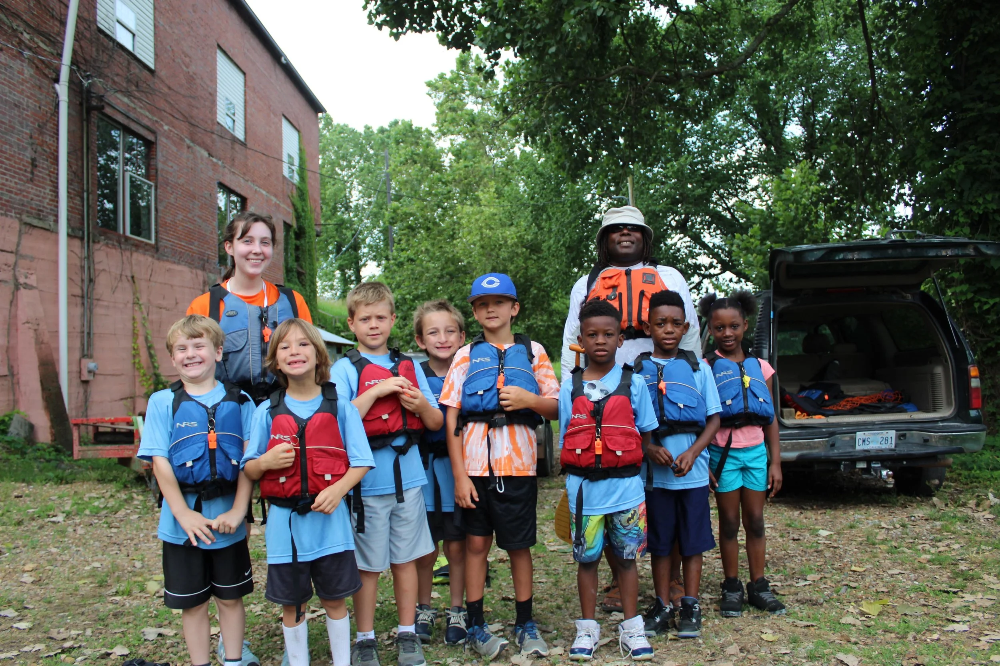

As LMRF finished the Rivergator, a six-year-long endeavour to create a guidebook for the Lower Mississippi River, we asked ourselves what was next. How can we best help protect the future of the Mississippi River and all its inhabitants?
The answer was in our mission to promote stewardship of the Mississippi River. If we want to promote stewardship, we need to create a generation of people who are connected to the river and dedicated to its protection. So in 2018, we turned out attention to promoting youth engagement.

So far this year we have partnered with a high school Biology class to connect their students with the ecology of the river, supported Camp R.O.C.K by taking their students canoeing on the Sunflower and sponsored the first-ever Educator's Paddle where teachers learned ways they can bring the Mississippi into their classrooms.
And we are just getting started. June brings the 5-day Leadership Camp for high school students and the Delta Adventure Day Camp. Follow the blog or follow us on Facebook to see updates from these camps as we continue to make the MS River accessible to all!